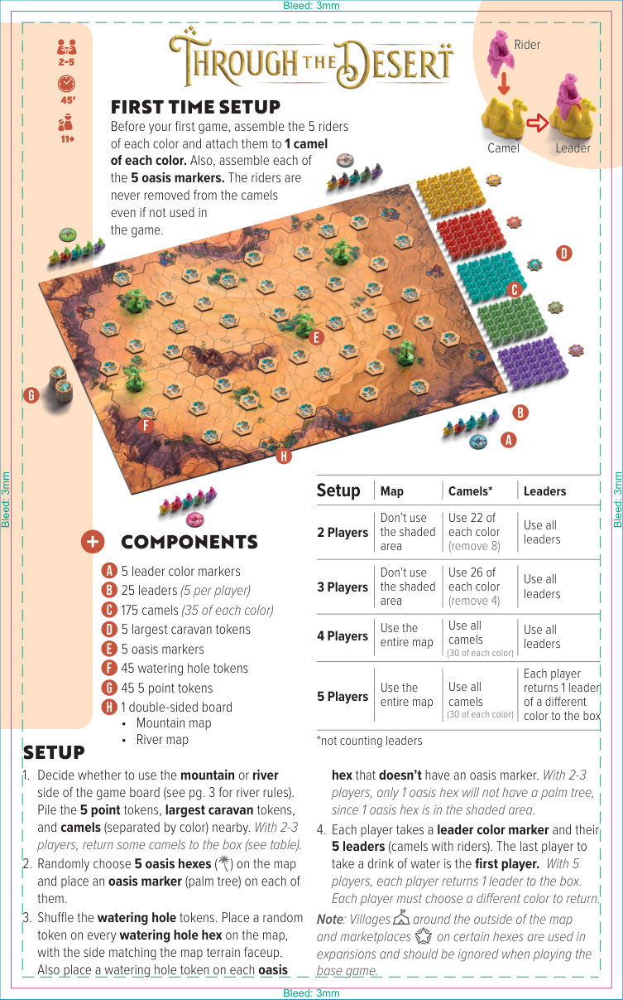
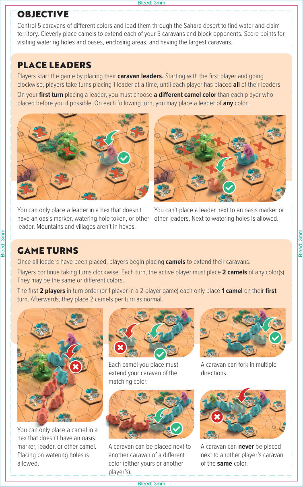
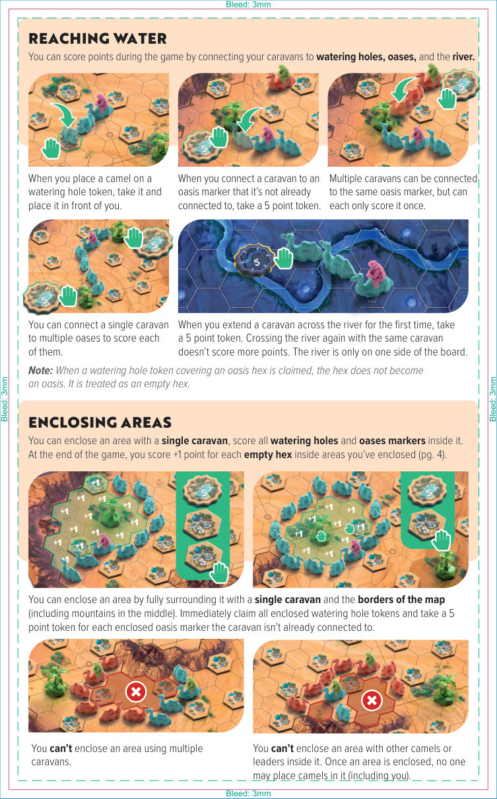
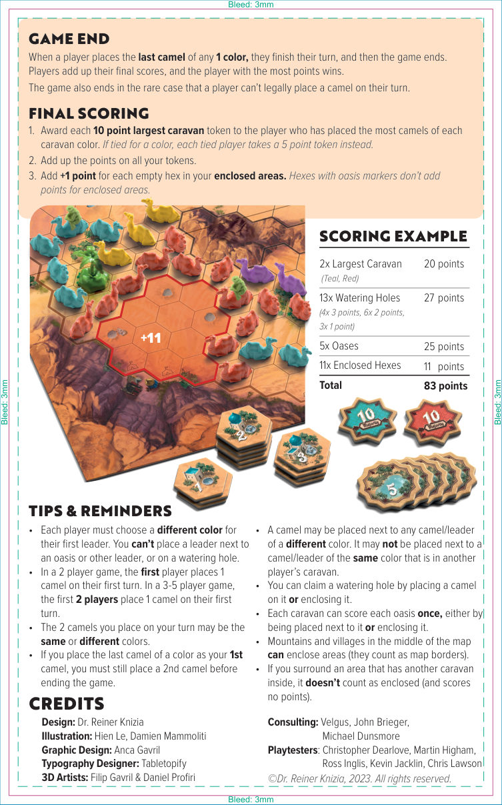
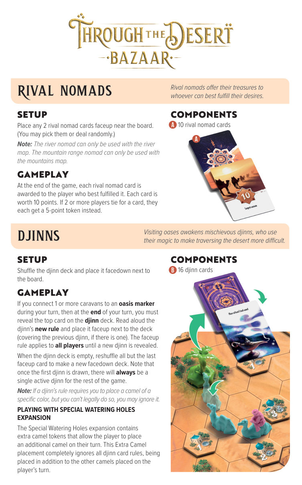
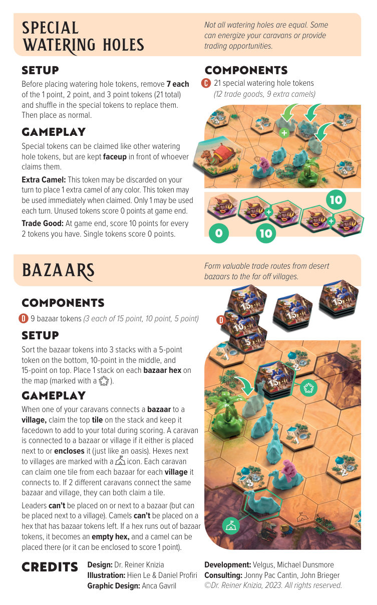

1概览
在《穿越沙漠（Through the Desert）》中，你将操控五种不同颜色的商队，穿越撒哈拉沙漠寻找水源并占领领地。巧妙地放置骆驼以延伸你的商队，同时阻挡对手。得分方式包括：抵达水坑与绿洲、围合区域，以及拥有每种颜色中最庞大的商队。
2组件
5 个，用于标识每位玩家选择的颜色。
25 个（每位玩家 5 个），由骆驼与骑手组成，代表每支商队的起点。
175 个，五种颜色（红、青、黄、绿、紫）各 35 个。
5 个 10 分标记。
5 个棕榈树标记。
45 个，分 1 / 2 / 3 分。
45 个。
一面为山地地图（Mountain Map），另一面为河流地图（River Map）。

3准备
首次组装
在第一次游戏前，将每种颜色的 5 名骑手分别安装到 5 匹骆驼上，组成 25 个首领；同时组装 5 个绿洲标记。骑手一经安装就不再从骆驼上取下，即使该颜色未在本局中使用。
初始设置
- 决定使用版图的山地面还是河流面（河流规则见第 6 章）。将 5 分标记、最大商队标记以及骆驼（按颜色分类）放到一旁。2–3 人游戏时，按下方表格将部分骆驼放回盒中。
- 在地图上随机选择 5 个绿洲格，各放置 1 个绿洲标记（棕榈树）。
- 洗混水坑标记，在每个水坑格上随机放置 1 个，正面朝上的一面须与地图地形面一致。同时，在没有绿洲标记的绿洲格上也放 1 个水坑标记。2–3 人游戏时，只有 1 个绿洲格不会长棕榈树，因为 1 个绿洲格位于阴影区域内。
- 每位玩家拿取 1 个首领颜色标记和自己的 5 个首领（带骑手的骆驼）。最后喝过水的玩家成为起始玩家。5 人游戏时，每位玩家须将 1 个首领放回盒中，且放回的颜色必须各不相同。
人数与组件对照表
下表中的骆驼数量均不含首领所用的骆驼。
| 人数 | 版图 | 骆驼 | 首领 |
|---|---|---|---|
| 2 人 | 不使用阴影区域 | 每种颜色使用 22 个 （移除 8 个） | 使用所有首领 |
| 3 人 | 不使用阴影区域 | 每种颜色使用 26 个 （移除 4 个） | 使用所有首领 |
| 4 人 | 使用整张版图 | 使用所有骆驼 （每种颜色 30 个） | 使用所有首领 |
| 5 人 | 使用整张版图 | 使用所有骆驼 （每种颜色 30 个） | 每位玩家放回 1 个首领 （颜色各不相同） |
4摆放首领
游戏从摆放商队首领开始。从起始玩家开始顺时针进行，每位玩家每次放置 1 个首领，直到每人所有首领都放置完毕。
- 在你第一次放置首领时，必须选择一个与在你之前玩家都不同的骆驼颜色（只要可能）。之后的每次首领放置，颜色不限。
- 首领不能放在绿洲标记旁，也不能放在其他首领旁；可以放在水坑旁。
- 首领只能放在没有绿洲标记、水坑标记或其他首领的格子里。山地与村庄不占据格子。

5游戏回合
所有首领放置完毕后，玩家开始放置骆驼来延伸自己的商队。顺时针轮流进行，每回合当前玩家必须放置 2 个骆驼，颜色可相同也可不同。
第一回合调整
- 2 人游戏：起始玩家在自己的第一回合只放置 1 个骆驼。
- 3–5 人游戏：前两位玩家在自己的第一回合各只放置 1 个骆驼。
- 之后所有玩家每回合正常放置 2 个骆驼。
骆驼放置规则
- 每个你放置的骆驼必须延伸你同色商队。
- 商队可以向多个方向分叉。
- 商队可以紧挨其他颜色商队（你自己的或其他玩家的）。
- 商队永远不能紧挨另一位玩家同色的商队。
- 骆驼只能放在没有绿洲标记、首领或其他骆驼的格子里；放在水坑格上允许。
6连接水源
你可以通过让商队连上水坑、绿洲或河流来在游戏过程中得分。
水坑
当你把骆驼放到水坑标记上时，立刻拿取该标记并放到自己面前。该标记的分值将在终局计入总分。
绿洲
当你把一支商队连接到此前未连接过的绿洲标记时，立刻拿取 1 个 5 分标记。多支商队可以连接到同一个绿洲标记，但每支商队只能因同一个绿洲得分一次。一支商队可以连接多个绿洲，分别得分。
河流
当你第一次让一支商队穿过河流时，立刻拿取 1 个 5 分标记。同一支商队再次过河不再得分。河流只出现在版图的一面。

7围合区域
你可以用单一颜色的商队围合出一片区域，区域内的水坑与绿洲标记立即归你，并在终局获得额外分数。
围合条件
- 必须用同一支商队完全包围一片区域，可借助版图边界或地图中央的山地/村庄作为边界。
- 不能用多支商队共同围合一个区域。
- 区域内不能有其他骆驼或首领。一旦区域被围合，任何人（包括你）都不能再在里面放置骆驼。
围合得分
围合完成后，立即拿取区域内所有水坑标记，并对该商队尚未连接过的每个绿洲标记拿取 1 个 5 分标记。游戏结束时，你围合的每个空格再额外获得 +1 分（含有绿洲标记的格子不计）。
8游戏结束
当一名玩家放置了任意一种颜色的最后一个骆驼时，他完成该回合后游戏立即结束。随后玩家加总分数，最高分者获胜。
在极少数情况下，如果一名玩家在自己的回合无法合法放置任何骆驼，游戏也会结束。
9终局计分
- 将每种颜色的 10 分“最大商队标记”授予该颜色骆驼数量最多的玩家。若平手，则每位平手玩家各拿 1 个 5 分标记代替。
- 加总你所有标记上的分数。
- 为你围合区域中的每个空格额外加 1 分；含有绿洲标记的格子不计算。
10提示与提醒
- 每位玩家的第一个首领必须选择不同颜色。首领不能放在绿洲或其他首领旁边，也不能放在水坑上。
- 2 人游戏时，起始玩家第一回合放 1 个骆驼；3–5 人游戏时，前两位玩家第一回合各放 1 个骆驼。
- 你每回合放置的 2 个骆驼可以同色，也可以不同色。
- 如果你放置了某个颜色的最后一个骆驼作为你的第 1 个骆驼，你仍必须在本回合放置第 2 个骆驼，然后游戏才结束。
- 骆驼可以放在任何不同颜色的骆驼/首领旁边；但不能放在另一位玩家同色商队的骆驼/首领旁边。
- 你可以通过放置骆驼或围合区域来拿取水坑。
- 每支商队只能通过“放置到相邻”或“围合”两种方式之一对同一个绿洲得分一次。
- 地图中央的山地和村庄可视为边界，用于围合区域。
- 如果你包围的区域内有其他商队，则不算围合，不得分。
11计分示例
| 项目 | 数量 | 分数 |
|---|---|---|
| 最大商队标记（青色、红色） | 2 个 | 20 分 |
| 水坑（4×3 分、6×2 分、3×1 分） | 13 个 | 27 分 |
| 绿洲 | 5 个 | 25 分 |
| 围合空格 | 11 格 | 11 分 |
| 总分 | 83 分 | |

12Bazaar 扩展
Bazaar 扩展包含四个可独立或组合使用的模块：竞争对手游牧民（Rival Nomads）、精灵（Djinns）、集市（Bazaars）以及特殊水坑（Special Watering Holes）。它们可与基础规则一起使用，为穿越沙漠增加新的战术维度。

竞争对手游牧民（Rival Nomads）
竞争对手游牧民会把他们的财宝献给最能满足其需求的人。
组件：10 张竞争对手游牧民卡。
设置：在游戏版图旁正面朝上放置任意 2 张竞争对手游牧民卡（可挑选，也可随机发）。
注意：河流游牧民（River Nomad）只能与河流地图搭配使用；山脉游牧民（Mountain Range Nomad）只能与山地地图搭配使用。
玩法：游戏结束时，每张竞争对手游牧民卡授予最满足其条件的玩家，价值 10 分。若 2 名或以上玩家平手，则每人各拿 1 个 5 分标记代替。
精灵（Djinns）
造访绿洲会唤醒淘气的精灵，它们会用魔法让沙漠穿越变得更加困难。
组件：16 张精灵卡。
设置：洗混精灵牌库，背面朝上放在版图旁。
玩法：如果你在你的回合内将 1 支或多支商队连接到绿洲标记，那么在本回合结束时，必须翻开精灵牌库顶部的 1 张卡，大声读出精灵的新规则，并将它正面朝上放在牌库旁（覆盖之前生效的精灵卡，如果有）。这张正面朝上的规则对所有玩家生效，直到新的精灵被翻出。
当精灵牌库抽空时，将除最后一张正面朝上精灵卡外的所有卡牌重洗，组成新的背面朝上牌库。注意：一旦第一张精灵被翻出，余下整局游戏中都会始终有 1 张生效的精灵卡。

集市（Bazaars）
从沙漠集市到远方村庄，建立宝贵的贸易路线。
组件：9 个集市标记，其中 15 分、10 分、5 分各 3 个。
设置：将集市标记分成 3 叠，每叠从下到上依次放 5 分、10 分、15 分。然后在每个集市格（地图上标有集市图标的格子）上放 1 叠。
玩法：当你的一支商队将一个集市与一个村庄连接起来时，拿取该叠最上方的标记，背面朝下保留，终局计分时加入总分。商队与集市或村庄“连接”的定义与绿洲相同：放置到相邻，或围合它。与村庄相邻的格子标有特殊图标。
每支商队每连接到一个村庄，就可以从每个集市拿取 1 个标记。如果 2 支不同商队同时连接同一个集市与同一个村庄，它们都可以拿取标记。
特殊水坑（Special Watering Holes）
并非所有水坑都相同。有些能为商队注入能量，有些则带来贸易机会。
组件：21 个特殊水坑标记，其中 12 个贸易货物（Trade Goods）和 9 个额外骆驼（Extra Camel）。
设置：在放置普通水坑标记前，先移除 7 个 1 分、7 个 2 分、7 个 3 分的水坑标记（共 21 个），洗混特殊水坑标记替换它们，然后按正常流程放置。
玩法：特殊标记可以像普通水坑标记一样被拿取，但拿取后正面朝上放在获得者面前。它们分为两类：
- 额外骆驼（Extra Camel）：在你的回合可以弃掉该标记，额外放置 1 个任意颜色的骆驼。该标记可在获得后立即使用。每回合最多使用 1 个。未使用的额外骆驼标记在终局计 0 分。
- 贸易货物（Trade Goods）：游戏结束时，每拥有 2 个贸易货物标记得 10 分；单个标记计 0 分。
制作人员
设计（Design）：Dr. Reiner Knizia
插画（Illustration）：Hien Le、Damien Mammoliti
平面设计（Graphic Design）：Anca Gavril
字体设计（Typography Designer）：Tabletopify
3D 美术（3D Artists）：Filip Gavril、Daniel Profiri
顾问（Consulting）：Velgus、John Brieger、Michael Dunsmore
测试人员（Playtesters）：Christopher Dearlove、Martin Higham、Ross Inglis、Kevin Jacklin、Chris Lawson
扩展（Bazaar）差分署名：插画 Hien Le & Daniel Profiri；开发（Development）Velgus、Michael Dunsmore；顾问（Consulting）新增 Jonny Pac Cantin。
版权：© Dr. Reiner Knizia, 2023. All rights reserved.